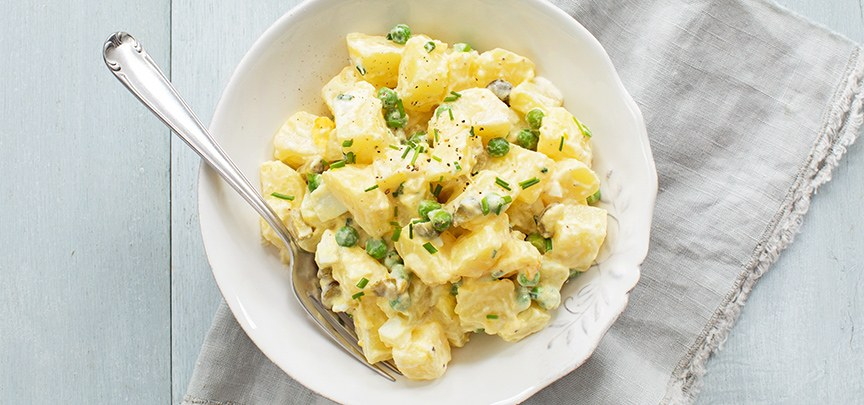

Lekkere Aardappelsalade

Lekkere Aardappelsalade. Ziet dat er niet jammie uit? Hihi!
Wanneer het buiten koud en donker is, de mensen om je heen alleen maar depressieve praat uitslaan en alles stom lijkt, is het tijd voor een super aardappelsalade.
Deze salade is makkelijk en snel te bereiden en maakt dat je je snel weer beter voelt!
Ingredienten:
- 4 kilo Aardappels
- 1 kilo Appels
- 1 kilo Perziken
- 1 kilo Ananas
- 600 gram Bastard suiker
- 10 gram Zout
- 10 gram Peper
- 1 liter (Knor) Kaassaus
Bereidingswijze:
- Schild die aardappels en kook ze in 4 liter water gaar, snijd de aardappels vervolgens in blokjes van 3 bij 3 centimer groot en mieter ze in de salade bak.
- Snijd net als de aardappels de appels, perziken en ananas in blokjes van 3 bij 3 centimeter en voeg deze ook toe aan de pan.
- Lekker bezig! Ben je moe. Neem dan tussendoor een pauze van zo'n 10 minuten. Gooi vervolgens de overige ingredienten in de salade kom of bak en roer flink!
- Serveer de salade op mooie grote borden die je daarna nog zo'n 30 minuten in de koelkast laat staan. Leuk!
- Geniet van je super salade! Zeker weten dat jij je na het eten van deze maaltijd een stuk beter voelt!